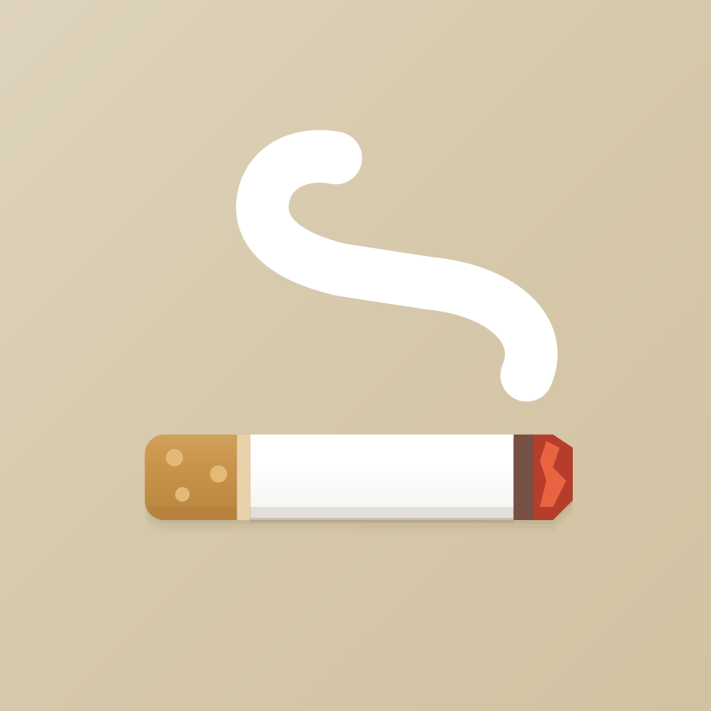
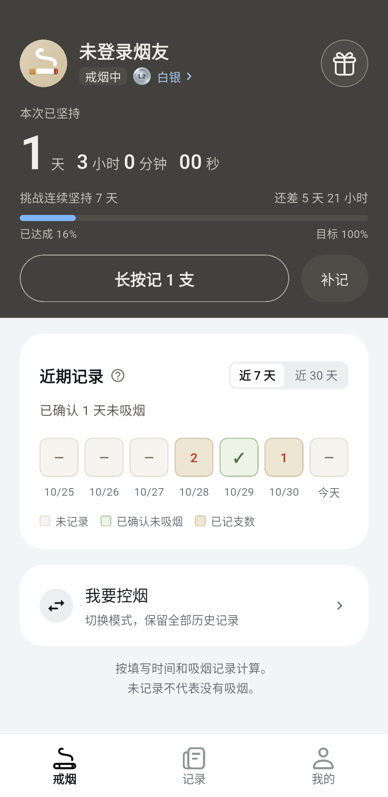
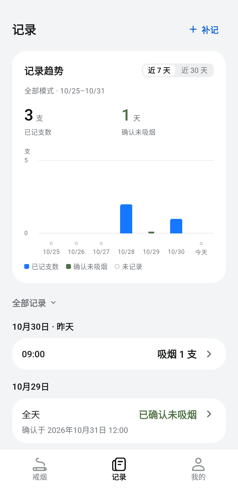

记录每一次
记录、补记和整理吸烟情况，回看近期变化。

早早戒烟早早戒烟是一款戒烟与控烟记录工具。记录当下，回顾变化，让每一步进展都看得见。
无论你正尝试戒烟，还是希望了解自己的吸烟情况，早早戒烟都可以帮你把日常记录整理得更清楚。
记录、补记和整理吸烟情况，回看近期变化。
查看戒烟时长与阶段目标，也可切换至控烟模式。
通过 Android 桌面组件查看摘要，并快捷记录。
在首页查看当前进展，在记录页回顾近 7 天或 30 天的变化。

查看时长、阶段目标与近期记录

回看已记录支数和确认未吸烟的日期
以上为 Android 模拟器内测界面，图中记录为测试数据；实际界面可能随版本调整。
填写起始时间，按需要使用戒烟或控烟模式；切换模式时保留历史记录。
在首页记录或补记吸烟情况，在记录页查看、修改和删除记录；已结束的日期可按实际情况确认未吸烟。
当前内测版本无需登录，记录保存在设备本机，未接入云同步。
可手动导出备份并在需要时恢复。恢复会替换现有记录，换机前请妥善保存备份文件。
应用依据你输入的信息展示记录与统计，不自动检测吸烟，不提供医疗诊断或疗效保证。